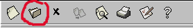
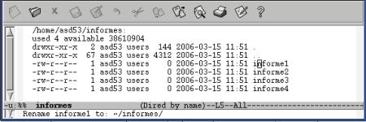
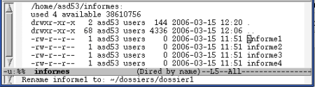

13. Dired:Edición de directorios
Pág.Anterior | Índice | Pág.Siguente
Dired es una de las características mas interesantes de Emacs.
Con Dired pueden buscarse archivos en los directorios, eliminarlos, renombrarlos, copiarlos, comprimirlos.... En definitiva, llevar una completa gestión de archivos y directorios sin moverse de Emacs.
13.1 Activar Dired.
Pág.Anterior | Índice | Inicio Página | Pág.Siguente
Podemos activar el editor de directorios de varias formas. Através de los comandos :
- Barra de Herramientas : Seleccionando el icono correspondiente.
- Opción de menú : File--> Open Directory
- Comando : C-x d
- Comando "largo" : M-x dired <Enter>
En todos los anteriones casos Emacs nos pide que introduzcamos el nombre del directorio que deseamos abrir.
Otras maneras de activar Dired son:
Utilizando el comando de abrir archivos C-x C-f, pero llamando a un directorio en vez de a un archivo.
Al iniciar Emacs desde la terminal, dar el nombre del directorio que deseemos abrir como argumento : # emacs nombre_directorio.
En algunas versiones, arrastrando la carpeta del directorio dentro de la ventana de Emacs.
Emacs un buffer con el nombre del directorio abierto.La ventana que nos presenta Dired es semejante a la que se nos presentaria ejecutando el comando Unix ls - l
Podemos observar como en la barra de menús de la ventana de Dired aparecen las nuenas opciones: Operate, Mark, Regexp, Immediate y Subdir .
Para activar ( o desactivar, si está activada) la función de color en la presentación de Dired, se ejecuta el siguiente comando:
- M-x font-lock-mode <Enter>
Por defecto, los archivos se listan por orden de nombre. Si deseamos cambiar el criterio de ordenación lo haremos mediante el comando:
- Comando : s
- Comando "largo" : M-x dired-sort-toggle-or-edit <Enter>
El comando s actua de la siguiente manera ( partiendo de ordenación por nombre:
Nombre--s-->Fecha Descendente--s-->Fecha Ascentente--s-->Nombre
En la linea de modo, al lado de Dired podrá verse la información sobre el criterio de ordenación: by date o by name.
Para movernos dentros de la ventana de Dired, el ratón , las teclas de flecha y las teclas <AvPág.> y <RePág.> son las opciones más fáciles. También pueden utilizarse los siguientes comandos:
- Para ir al siguiente archivo de la lista:
- n ; C-n o la tecla <Space>
- Para ir al anterior archivo de la lista:
- p ; C-p o la tecla <BackDel>
Tras esta visión global de Dired vamos a pasar a describir las principales operaciones que pueden realizarse en este entorno:
- Ver y editar archivos
- Eliminar archivos
- Copiar archivos
- Renombrar archivos
- Comprimir y descomprimir archivos
- Comparar archivos
- Usar comandos shell en los archivos
- Trabajar con grupos de archivos
- Navegar por los directorios
13.2 Dired: Ver y Editar archivos.
Pág.Anterior | Índice | Inicio Página | Pág.Siguente
El comando que vamos a utilizar para ver archivos son:
- Opción de menú : Immediate--> View This File
- Comando : v
- Comando "largo" : M-x dired-view-file <Enter>
- Nos muestra el archivo ,sobre el que está el cursor, en modo solo-lectura.
Tecleando q o C-c, regresamos a la ventana del listado de archivos.
Para editar archivos utilizaremos los siguientes comandos:
- Opción de menú : Immediate--> Find This File
- Comando : e
- Comando "largo" : M-x dired-find-file <Enter>
- Edita el archivo ,sobre el que está el cursor.
- Comando : f
- Comando "largo" : M-x dired-advertised-find-file <Enter>
- Edita el archivo ,sobre el que está el cursor.
- <Enter>
- Edita el archivo ,sobre el que está el cursor.
En todos los casos,se abre un buffer en el que pueden utilizarse todas las opciones de edición que nos ofrece Emac.
Dicho buffer aparece en el listado de buffers, con el nombre del archivo abierto.
13.3 Dired: Eliminar archivos.
Pág.Anterior | Índice | Inicio Página | Pág.Siguente
Los comandos implicados en el proceso de eliminación de archivos son:
- Opción de menú : Mark--> Flag
- Comando : d
- Comando "largo" : M-x dired-flag-file-delection <Enter>
- Marca el archivo para su eliminación. En la primera columna aparece el carácter D .
- Opción de menú : Mark-->Unmark
- Comando : u
- Comando "largo" : M-x dired-unmark <Enter>
- Elimina la marca.
- <DelBack>
- Elimina la marca del archivo de la linea anterior.
- Comando : x
- Comando "largo" : M-x dired-do-flagged-delete <Enter>
- Elimina los archivos marcados con D .
- Opción de menú : Operate-->Delete
- Comando : D
- Comando "largo" : M-x dired-do-delete <Enter>
- Eliminación inmediata. Sin previo marcado.
Para eliminar un archivo desde Dired es preciso marcarlo previamente ( Excepto cuando se utiliza el comando de eliminación inmediata). Emacs señala a los archivos marcados para su eliminación colocando una letra D en su primera columna.
Pueden marcarse múltiples archivos para ser eliminados.
Antes de proceder a la eliminación de un archivo, Emacs nos pedirá confirmación, para cada uno de los archivos marcados, mediante el siguiente mensaje en el mini-buffer: Delete nombre_archivo (yes or no):.
Cuando se utiliza el comando de eliminación inmediata, también se pedirá confirmación antes de proceder a la eliminación.
Es interesante mencionar una serie de comandos que nos permiten marcar todos los archivos de un determinado tipo:
- Opción de menú : Mark-->Flag Auto-save Files
- Comando : #
- Comando "largo" : M-x dired-flag-autosave-files <Enter>
- Marca todos los archivos de auto-guardado.
- Opción de menú : Mark-->Flag Backup Files
- Comando : ~
- Comando "largo" : M-x dired-flag-backup-files <Enter>
- Marca todos los archivos de backup.
- Opción de menú : Mark-->Mark Executables
- Comando : **
- Comando "largo" : M-x dired-mark-executables <Enter>
- Marca todos los archivos de ejecutables.
- Opción de menú : Mark-->Mark Directories
- Comando : */
- Comando "largo" : M-x dired-mark-directories <Enter>
- Marca todos los directorios.
- Opción de menú : Mark-->Mark Symlinks
- Comando : *@
- Comando "largo" : M-x dired-mark-symlinks <Enter>
- Marca todos los enlaces simbólicos.
- Opción de menú : Mark-->Mark Old Backups
- Comando : .
- Comando "largo" : M-x dired-clean-directory <Enter>
- Marca todos los backups numerados.
13.4 Dired: Copiar archivos.
Pág.Anterior | Índice | Inicio Página | Pág.Siguente
El comando utilizado en Dired para copiar archivos es:
- Opción de menú : Operate-->Copy to
- Comando : C
- Comando "largo" : M-x dired-do-copy <Enter>
- Copiar el archivo sobre el que está el cursor en la localización que especifiquemos.
Para copiar un archivo, situamos el cursor en su linea y ejecutamos el comando anterior.
Emacs nos pedirá, mediante un mensaje en el mini-buffer que especifiquemos la localización en que queremos situar la cópia. Copy nombre_archivo to:
Para copiar a la vez varios archivos, situados en lineas consecutivas, podemos preceder el comando de cópia, C, de un número, nº : Emacs copiará a la vez el archivo de la línea en que se encuentra el cursor y los nº-1 archivos siguientes.
Por ejemplo, 5C, copiaria el archivo de la linea del cursor más los cuatro siguientes.
13.5 Dired: Renombrar archivos.
Pág.Anterior | Índice | Inicio Página | Pág.Siguente
El comando usado para renombrar archivos en Dired es:
- Opción de menú : Operate-->Rename to
- Comando : R
- Comando "largo" : M-x dired-do-rename <Enter>
- Cambia el nombre del archivo sobre el que está el cursor .
Es conveniente detallar el comportamiento de este comando, ya que se comporta de forma similar a como lo hace el comando Unix mv : puede renombrar o mover archivos.
Vamos a aplicar el comando R sobre el archivo informe1, situado en el directorio ~/informes/
Cuando ejecutamos el comando , Emacs nos pide, mediante el mensaje en el mini-buffer Rename nombre_archivo to: que especifiquemos un nuevo nombre para el archivo.
Podemos observar que en el mensaje del mini-buffer se mantiene el directorio de ubicación del archivo; en el caso del ejemplo, ~/informes/.
|  |
Introducimos el nuevo nombre, dossier1, manteniendo el directorio original como localización del archivo.
Tras pulsar <Enter>, podemos ver como en la lista de archivos del directorio informes se ha producido el cambio de nombre.
Ahora, en lugar de mantener la localización original del archivo la cambiamos por otra, por ejemplo, cambiando el directorio ~/informes/, por el directorio ~/dossiers/,
|  |
Al ejecutar el comando R, el archivo se moverá al nuevo directorio especificado. Si le hemos asignado un nuevo nombre, aparecerá en el directorio destino con este nuevo nombre. Si no le hemos asignado ningún nuevo nombre, en el directorio destino aparecerá con el mismo nombre que tenia en el directorio origen. En el mini-buffer de la ventana de Dired aparecerá el mensaje Move: 1 file,
En definitiva, si no cambiamos la ruta de acceso (path) al archivo, el comando R cambiará el nombre del archivo por el especificado.
Si cambiamos la ruta de acceso (path) al archivo, lo moverá a la nueva localización, hayamos o no asignado unnuevo nombre al archivo.
El caso presentado como ejemplo podria resumirse en la siguiente tabla:
| ~/informes/dossier1 | Cambia el nombre de informe1 por del de dossier1, manteniendo el archivo en el directorio ~/informes/ |
| /dossiers/informe1 | Mueve el archivo informe1 al directorio ~/dossiers/, manteniendo el nombre original. |
| ~/dossiers/ | Mueve el archivo informe1 al directorio ~/dossiers/, manteniendo el nombre original |
| ~/dossiers/dossier1 | Mueve el archivo informe1 al directorio ~/dossiers/, cambiando el nombre original por el de dossier1 |
13.6 Dired: Compresión y Descompresión de archivos.
Pág.Anterior | Índice | Inicio Página | Pág.Siguente
Emacs utiliza el mismo comando tanto para la compresión como para la descompresión de archivos:
- Opción de menú : Operate-->Compress
- Comando : Z
- Comando "largo" : M-x dired-do-compress <Enter>
- Comprime o descomprime archivos .
Aplicando el comando a un archivo no comprimido, lo comprime. Cuando se aplica a un archivo comprimido, lo descomprime.
Para la compresión, Emacs utiliza gzip, por lo que los archivos comprimidos llevarán la extensión .gz
Los formatos de compresión que reconoce son compress (extensiones, .z o .Z) y el formato gzip, (extensión, .gz)
Antes de proceder a la compresión o a la descompresión de un archivo, Emacs nos pedirá confirmación.
Emacs dispone de la posibilidad de activar un modo de compresión / descompresión automática, lo que puede facilitarnos la edición de archivos comprimidos.
Para activar ( o desactivar) el modo de compresión / descompresión automática para una determinada sesión:
- Comando "largo" : M-x auto-compress-mode <Enter>
- Activa/Desactiva el modo de autocompresión .
Si deseamos configurar el auto-compress-mode de forma permanente, deberemos añadir la siguiente línea al fichero .emacs :
- (auto-compress-mode 1)
13.7 Dired: Comparación de archivos.
Pág.Anterior | Índice | Inicio Página | Pág.Siguente
Dired nos ofrece la posibilidad de utilizar el comando Unix, diff. Lo haremos mediante los siguientes comandos:
- Opción de menú : Immediate-->Diff
- Comando : =
- Comando "largo" : M-x dired-diff <Enter>
- Compara el archivo en el que tenemos situado el cursor con otro que deberá especificarse.
Cuando ejecutamos el comando, Emacs nos pide que especifiquemos el nombre del archivo con el que queremos realizar la comparación.
Emacs comparará ambos archivos , abriendo un buffer, *diff* con el output.
- Opción de menú : Immediate-->Compare with Backup
- Comando : M-=
- Comando "largo" : M-x dired-backup-diff <Enter>
- Compara el archivo en el que tenemos situado el cursor con su backup.
13.8 Dired: Ejecutar comandos shell en archivos.
Pág.Anterior | Índice | Inicio Página | Pág.Siguente
En general, podemos ejecutar cualquier comando shell ( chmod, grep, find, sort ...etc.) sobre cualquier archivo de la ventana Dired. Para ello utilizaremos el siguiente comando:
- Opción de menú : Operate-->Shell Command
- Comando : ! o, también X
- Comando "largo" : M-x dired-do-shell-command <Enter>
- Ejecución de comando shell en el archivo en el que está situado el cursor.
Tras ejecutar el comando, Emacs nos solicitará que introduzcamos el comando shell que deseamos ejecutar mediante el mensaje On nombre_archivo: .
Los outputs que pueda generar el comando shell aplicado se mostrarán en una nueva ventana; *Shell Command Output*
13.9 Dired: Trabajar con grupos de archivos.
Pág.Anterior | Índice | Inicio Página | Pág.Siguente
Dired nos ofrece la posibilidad de actuar sobre más de un archivo a la vez.
Para ello deberán crearse previamente los grupos de archivos sobre los que deseamos actuar.
13.9.1 Creación de grupos de archivos.
Pág.Anterior | Índice | Inicio Página | Pág.Siguente
La creación de un grupo de archivos se realiza marcando los archivos que queremos agrupar.
Los comandos implicados en las tareas de marcado son:
- Opción de menú : Mark-->Mark
- Comando : m
- Comando "largo" : M-x dired-mark <Enter>
- Marca el archivo en el que está situado el cursor. Lo señala colocando el símbolo * en la primera columna de su línea.
- Opción de menú : Mark-->Unmark
- Comando : u
- Comando "largo" : M-x dired-unmark <Enter>
- Desmarca el archivo en el que está situado el cursor. Elimina el símbolo * de la primera columna de su línea.
- Opción de menú : Mark-->Unmark All
- Comando : *! o, también, M-<BackDel>
- Comando "largo" : M-x dired-unmark-all-files <Enter>
- Desmarca todos los archivos marcados. Elimina los símbolos * de la primera columna de sus líneas.
- Opción de menú : Mark-->Toggle Marks
- Comando : t
- Comando "largo" : M-x dired-toggle-marks <Enter>
- Marca todos los archivos desmarcados y desmarca los marcados.
13.9.2 Acciones sobre grupos de archivos.
Pág.Anterior | Índice | Inicio Página | Pág.Siguente
Seguidamente vamos a resumir las acciones más frecuentes que suelen llevarse a cabo sobre grupos de archivos:
Creación de directorios:
- Opción de menú : Immediate-->Create Directory
- Comando : +
- Comando "largo" : M-x dired-create-directory <Enter>
- Crea un nuevo directorio. Emacs nos solicitará la intrducción del nombre del nuevo directorio..
Mover archivos a un nuevo directorio:
Utilizaremos el mismo comando que en 13.5 Dired:Renombrar archivos.
- Opción de menú : Operate-->Rename to
- Comando : R
- Comando "largo" : M-x dired-do-rename <Enter>
Para mover un conjunto de archivos a un nuevo directorio seguiremos los siguientes pasos:
- Marcar los archivos que desean moverse.
- Ejecutar el comando R
- Emacs nos preguntará donde queremos mover los archivos marcados: Introducimos la ruta al directorio destino.
- Tras pulsar <Enter>, se llevrá a cabo el traslado.
Buscar y reemplazar:
En Dired se nos ofrece la oportunidad de poder realizar la operación de buscar-y-reemplazar sobre un conjunto de archivos en lugar de hacerlo individualmente sobre cada uno de los archivos. El comando implicado es:
- Opción de menú : Operate-->Query replace in Files
- Comando : Q
- Comando "largo" : M-x dired-do-query-replace <Enter>
- Busca y reemplaza en un conjunto de archivos marcados.
El proceso a seguir es:
- Marcar los archivos sobre los que deseamos actuar.
- Ejecutar el comando Q
- Emacs nos pedira la introducción de la cadena de búsqueda y, después, la de sustitución.
- Introducidas ambas cadenas, pulsar <Enter> para que se lleve a cabo la operación.
Una posibilidad que se nos ofrece es la de realizar una búsqueda mediante una expresión regular:
- Opción de menú : Operate-->Search Files
- Comando : A
- Comando "largo" : M-x dired-do-search <Enter>
- Busca en un conjunto de archivos marcados mediante una expresión regular.
La búsqueda se detendrá al encontrar la primera coincidencia. Con el comando M- iremos pasando a las sucesivas coincidencias.
Navegar por los directorios:
Los siguientes comandos nos permiten navegar através de los directorios de la ventana de Dired:
- Comando : ^
- Comando "largo" : M-x dired-up-directory <Enter>
- Nos lleva al directorio padre del actual, en un nuevo buffer Dired.
- Opción de menú : Subdir-->Prev Dirline
- Comando : <
- Comando "largo" : M-x dired-prev-dirline <Enter>
- Nos lleva al directorio previo del actual.
- Opción de menú : Subdir-->Next Dirline
- Comando : >
- Comando "largo" : M-x dired-next-dirline <Enter>
- Nos lleva al directorio siguiente del actual.